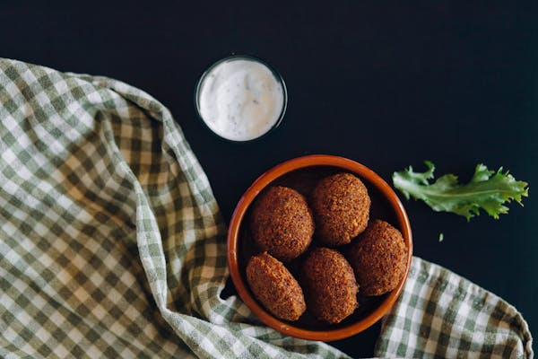

1 bawang bombay kecil, cincang halus
3 siung bawang putih, cincang
1/4 cangkir daun peterseli segar, cincang
1/4 cangkir daun ketumbar segar, cincang
1 sendok teh bubuk jintan
1 sendok teh bubuk ketumbar
1/2 sendok teh bubuk cabai merah (opsional)
1 sendok teh garam
1/2 sendok teh baking powder
2 sendok makan tepung terigu
Minyak untuk menggoreng
2. Buat Campuran Falafel: Masukkan kacang chickpea, bawang bombay, bawang putih, peterseli, ketumbar, jintan, ketumbar bubuk, bubuk cabai merah, dan garam ke dalam food processor. Proses hingga halus, tetapi tetap ada sedikit tekstur. Tambahkan baking powder dan tepung terigu, aduk hingga merata.
3. Bentuk Bola-bola Falafel: Ambil sekitar 1 sendok makan campuran falafel dan bentuk menjadi bola-bola kecil atau bentuk pipih sesuai selera.
4. Panaskan Minyak: Panaskan minyak dalam wajan besar dengan api sedang-tinggi. Pastikan minyak cukup banyak agar falafel bisa terendam saat digoreng.
5. Goreng Falafel: Masukkan bola-bola falafel ke dalam minyak panas dan goreng hingga kecokelatan dan renyah, sekitar 3-4 menit per sisi. Tiriskan falafel di atas kertas tisu untuk menghilangkan kelebihan minyak.
6. Sajikan: Sajikan falafel hangat dengan roti pita, salad, saus tahini, atau saus yogurt.
Falafel
Bahan-bahan
2 cangkir kacang chickpea kering (rendam dalam air semalaman)1 bawang bombay kecil, cincang halus
3 siung bawang putih, cincang
1/4 cangkir daun peterseli segar, cincang
1/4 cangkir daun ketumbar segar, cincang
1 sendok teh bubuk jintan
1 sendok teh bubuk ketumbar
1/2 sendok teh bubuk cabai merah (opsional)
1 sendok teh garam
1/2 sendok teh baking powder
2 sendok makan tepung terigu
Minyak untuk menggoreng
Instruksi
1. Siapkan Kacang Chickpea: Tiriskan kacang chickpea yang sudah direndam semalaman dan bilas dengan air bersih. Tiriskan dengan baik.2. Buat Campuran Falafel: Masukkan kacang chickpea, bawang bombay, bawang putih, peterseli, ketumbar, jintan, ketumbar bubuk, bubuk cabai merah, dan garam ke dalam food processor. Proses hingga halus, tetapi tetap ada sedikit tekstur. Tambahkan baking powder dan tepung terigu, aduk hingga merata.
3. Bentuk Bola-bola Falafel: Ambil sekitar 1 sendok makan campuran falafel dan bentuk menjadi bola-bola kecil atau bentuk pipih sesuai selera.
4. Panaskan Minyak: Panaskan minyak dalam wajan besar dengan api sedang-tinggi. Pastikan minyak cukup banyak agar falafel bisa terendam saat digoreng.
5. Goreng Falafel: Masukkan bola-bola falafel ke dalam minyak panas dan goreng hingga kecokelatan dan renyah, sekitar 3-4 menit per sisi. Tiriskan falafel di atas kertas tisu untuk menghilangkan kelebihan minyak.
6. Sajikan: Sajikan falafel hangat dengan roti pita, salad, saus tahini, atau saus yogurt.